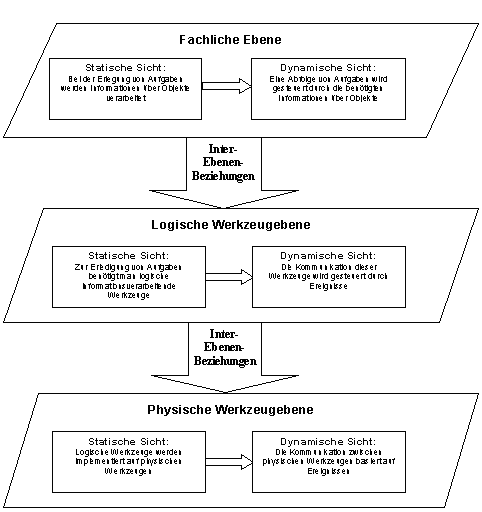

Fachliche Ebene: Die statische Sicht der fachliche Ebene beschreibt ein Unternehmen als eine Ansammlung seiner Aufgaben. Im Rahmen der Erfüllung der Aufgaben werden Informationen über Objekte verwendet und auch geschaffen (vgl. auch [13]). Informationen über Objekte liegen in Form von Merkmalen vor. Objekte mit gleichen Merkmalsarten werden zu Objekttypen zusammengefasst. Die dynamische Sicht der fachlichen Ebene beschreibt die Reihenfolge der Erfüllung der Aufgaben in Abhängigkeit von Ereignissen. Diese Ereignisse beziehen sich auf Informationen.
Logische Werkzeugebene: Die statische Sicht der logischen Werkzeugebene beschreibt welche logischen Werkzeuge ein Unternehmen zur Erfüllung seiner Aufgaben einsetzt, wie diese miteinander kommunizieren müssen, damit der auf der fachlichen Ebene beschriebene Zugriff auf Informationen gewährleistet ist und wie Informationen über Objekte logisch als Daten gespeichert werden. Die dynamische Sicht der logischen Werkzeugebene beschreibt die Reihenfolge der Kommunikation zwischen logischen Werkzeugen in Abhängigkeit von Ereignissen. Diese Ereignisse beziehen auf den Abschluss von Aktivitäten einer Aufgabe.
Physische Werkzeugebene: Die statische Sicht der physischen Werkzeugebene beschreibt welche physischen Werkzeuge ein Unternehmen zur Erfüllung seiner Aufgaben einsetzt, wie diese miteinander vernetzt sein müssen, damit die auf der logischen Werkzeugebene beschriebenen Kommunikation gewährleistet. Die dynamische Sicht beschreibt die Kommunikation zwischen physischen Datenverarbeitungsbausteinen.
Die zwischen den Elementen der drei Ebenen existierenden Beziehungen bezeichnen wir als Inter-Ebenen-Beziehungen.
Die folgende Abbildung zeigt die grundlegende Struktur des Meta-Modells für die Beschreibung von Krankenhausinformationssystemen.
